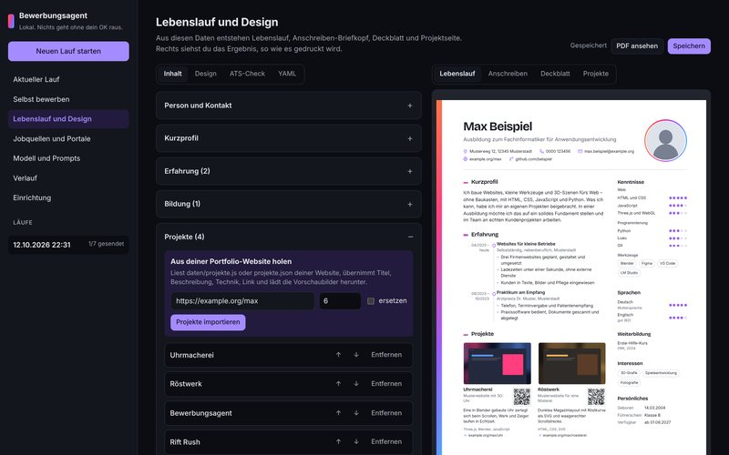
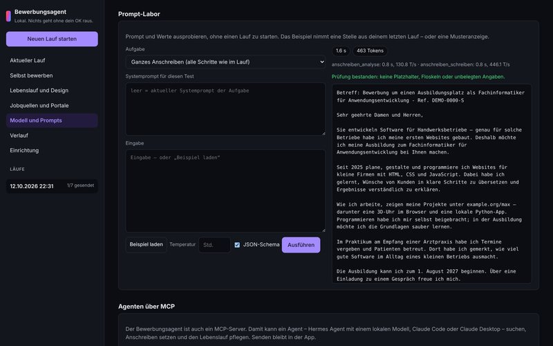
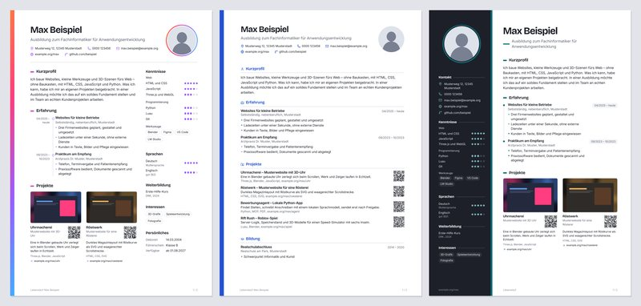

KI — 2026
Bewerbungsagent
Ein lokaler Agent, der Stellen aus mehreren Quellen sammelt, Anschreiben mit einem lokalen Modell oder Claude schreibt, Lebenslauf und Bewerbungsmappe gestaltet — und nichts verschickt, bevor ein Mensch wörtlich SENDEN eintippt.

Überblick
Der Bewerbungsagent sucht in der Jobbörse der Arbeitsagentur, bei Adzuna und Jooble und in den eigenen Jobalarmen, filtert nach Profil und Umkreis und schreibt je Stelle ein Anschreiben. Aus einer Lebenslauf-Datei setzt er Lebenslauf, Anschreiben, Deckblatt und Projektseite im selben Design — mit Zeitleiste, Symbolen, Projektbildern und QR-Codes. In der lokalen Oberfläche wird alles geprüft, mit Live-Vorschau bearbeitet und erst dann verschickt.
Die Aufgabe
Viele Bewerbungen pro Woche kosten Stunden: Anzeigen auf mehreren Portalen lesen, Adressen suchen, Anschreiben anpassen, den Lebenslauf für Bewerbungsportale lesbar halten, alles nachweisen. Kleine lokale Sprachmodelle helfen dabei nur, wenn man sie eng führt — sonst erfinden sie Abschlüsse und Jahreszahlen. Und ein Automat darf nie etwas an Firmen schicken, das niemand gelesen hat.
Der Ansatz
Der Agent übernimmt die Fleißarbeit, der Mensch die Entscheidung. Für Modelle um 8B gibt es eigene Systemprompts, JSON-Schemas als Grammatik und ein Anschreiben in zwei Schritten: erst Anforderungen und Belege zuordnen, dann schreiben. Ein Faktencheck markiert alles, was weder in Profil, Lebenslauf noch Anzeige steht. Senden gibt es nur in der Oberfläche — auch über den MCP-Server, an den sich Hermes, Claude Code oder Claude Desktop anbinden, lässt sich keine Mail auslösen.

Das System
Python mit Standardbibliothek für Oberfläche und Server. Die Unterlagen sind Jinja2-Vorlagen auf festen A4-Blättern; ein kleines Skript verteilt die Abschnitte auf Seiten, gedruckt wird mit dem Edge oder Chrome, der ohnehin installiert ist. Modelle laufen über LM Studio, Ollama oder jeden OpenAI-kompatiblen Server, alternativ Claude über das eigene Abo oder die API. Dazu ein ATS-Check, ein Portfolio-Import aus der eigenen Website, Lesezeichen zum Übernehmen von Anzeigen und Ausfüllen von Formularen und ein Prompt-Labor mit Tokens pro Sekunde.
Das Ergebnis
97 automatische Tests, darunter ein Versand an einen lokalen Test-Mailserver und echte PDF-Drucke mit Seitenzählung. Beim Lesen von 27 echten Anzeigen wollten 7 keine Mail-Bewerbung, obwohl eine Adresse im Text stand — genau diese Fälle fängt der Agent ab. Captchas und Bot-Schutz umgeht er bewusst nicht: dafür gibt es das Lesezeichen im eigenen Browser. Die Bilder zeigen eine Vorführung mit erfundenen Daten.
